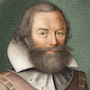
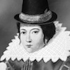

Born in 1579 or 1580 in Lincolnshire, England, John Smith eventually made his way to America to help govern the British colony of Jamestown. After allegedly being saved from death by Pocahontas, he established trading agreements with native tribes. With his governing tactics called into question, he returned to England in 1609 and became a staunch advocate of colonization via his published works.
The Life and Times of Pocahontas

Pocahontas was a Powhatan Native American woman, born around 1595, known for her involvement with English colonial settlement at Jamestown, Virginia. In a well-known historical anecdote, she saved the life of Englishman John Smith, by placing her head upon his own at the moment of his execution. Pocahontas later married a colonist, changed her name to Rebecca Rolfe and died while visiting England in 1617.